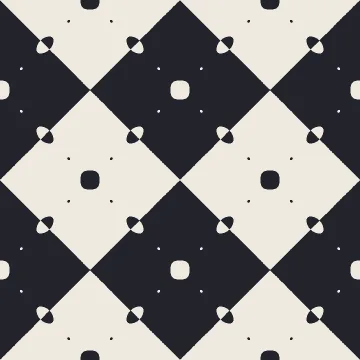

Vedere la propria musica
Ogni musica ha una firma: il modo in cui la sua energia si distribuisce tra le frequenze. Premi «Ascolta»: la pagina misura quell'energia, disegna la figura di Chladni del suono e cerca, tra i motivi di La Livrée d'Hermès, quello il cui spettro le somiglia di più. La scelta si basa sulla somiglianza di due spettri, non su una legge musicale: un motivo non «esprime» un brano.
Attenzione: le immagini possono cambiare in fretta e lampeggiare. In «Più opzioni», l'impostazione «riduci i cambiamenti rapidi» le rallenta.
Convalidata
Prova
Nulla lascia il tuo browser: il file, il microfono e l'audio catturato sono analizzati sul posto e non vengono inviati da nessuna parte.
Impostazioni al volo
La scena
Registra
Per capire
Lettura in chiavi
Scorciatoie da tastiera
Informazioni sul dispositivo
La settimana
Musica composta con l'IA da MC Claude.
Vedi anche
Galleria bicoloreI motivi bicolori generati dagli assi, chiusi sul cubo: grana, pavimentazione, esportazione. (Pagina in francese.) (in francese)Galleria tricoloreI motivi unificati, generati dalla miscela di tinte: seleziona un motivo per vedere la sua pavimentazione. (Pagina in francese.) (in francese)SfondiSfondi tessili a schermo intero, reattivi al suono o in modalità meditativa. (Pagina in francese.) (in francese)Galleria di animazioniLe animazioni delle collezioni di fondi, da guardare e da scaricare in MP4.ChladniFigure, scale e frequenze: la pagina che lega il vocabolario dei motivi ai modi di una piastra. (Pagina in francese.) (in francese)Il libroLa Livrée d'Hermès online, pagina per pagina, con il PDF gratuito.
Come funziona
La pagina misura l'energia del suono alle frequenze dei cerchi di modi di una piastra quadrata, disegna la figura di Chladni corrispondente e cerca, tra i motivi di La Livrée d'Hermès, quello il cui spettro somiglia di più a quello del suono.
Una figura di Chladni è il disegno che la sabbia forma su una piastra che vibra: si dispone lungo le linee che non si muovono. Qui la piastra è un quadrato.

Qui «somigliare» significa che due spettri sono vicini: l'energia si distribuisce allo stesso modo tra le frequenze. La scelta si basa sulla somiglianza di due spettri, non su una legge musicale: un motivo non «esprime» un brano.
Nulla lascia il tuo browser: il file, il microfono e l'audio catturato sono analizzati sul posto e non vengono inviati da nessuna parte. Le immagini e i video registrati vengono creati nel tuo browser e scaricati sul tuo dispositivo.
Premi «Ascolta» per riprodurre il primo brano d'esempio, oppure scegli un altro brano, un file audio o il microfono. In «Più opzioni» puoi registrare un'immagine della figura o un video di 15 secondi con il suono.
Contenuti con licenza CC BY-NC 4.0, codice con licenza AGPL v3 (licenza commerciale su richiesta). Autore: Anibal Edelberto Amiot. Sull'autore (in francese)